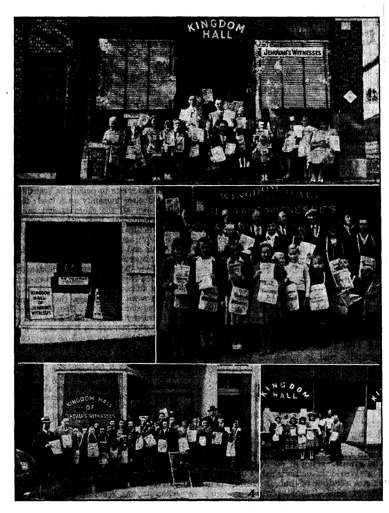

In Brief
Light Comes to the Dark Continent Ban on Jehovah’s witnesses’ Literature in the Union of South Africa Raised Religious Politicians to the Rescue Evildoers Hate the Bible Light Godly Zeal Defeats Religious Persecution ‘Light Shineth More and More’
What! No’Cigarettes!
“Treasure Islands”
Crown of the Virgin-of Yucatan Treasures of Sweetness Education Nominally Compulsory Key to Continental Defense “Thy Word Is Truth”
Prison Term for Spirits Netherlander Notanda
The “Divine Right” Racket
The Big Business Backers of Hitler and Mussolini
3
ri
3
4
5
5
7
7
8
8
9
13
15
16
18
18
19
“Jehovah’s witness Called at My Door”
To the Washington (D. C.) Evening Star 23
Kingdom Halls of Jehovah’s witnesses 26-27 “The Way of the Transgressor”
Published every other Wednesday by WATCHTOWER BIBLE AND TRACT SOCIETY, INC. lit Adams St., Brooklyn 1, N. Y., U. S. A. OFFICERS
President t N. H. Knorr
Secretary W. E. Van Amburgh
Editor Clayton J. Woodworth
Five Cents a Copy $1 a year in the United States $1.25 to Canada and all other countries
NOTICE TO SUBSCRIBERS
Remittances: For your own safety, remit by postal or express money order. When coin or currency is lost in the ordinary malls, there Is no redress. Remittances from countries other than those named below may be made to the Brooklyn office, but only by International postal money order.
Receipt of a new or renewal subscription will be acknowledged only when requested. Notice of Expiration is sent with the journal one month before subscription expires. Please renew promptly to avoid loss of copies. Send change of address direct to us rather than to the post office. Your request should reach us at least two weeks before the date of issue with which it is to take effect. Send your old as well as the new address. Copies will not be forwarded by the post office to your new address unless extra postage is provided by you.
Published also in Greek, Portuguese, Spanish, and Ukrainian.
OFFICES FOR OTHER COUNTRIES
England 34*Craven Terrace, London, W. 2
Australia 7 Beresford Road, Strathfield, N- S. W. South Africa 623 Boston House, Cape Town
Mexico Calzada de Melchor Ocampo 71, Mexico, D. F. Brazil Caixa Postal 1319, Rio de Janeiro
Argentina Calle Honduras 5646-48, Buenos Aires Entered as second-class matter at Brooklyn, N. Y., under the Act of March 3, 1879.
New Giants in the Clouds ■i
♦ Ever newer and bigger giants are finding their way into and above the clouds. There is Uncle Sam’s boat, Mars, the world’s largest flying boat. It has the space of a 15-room house. It weighs 371 tons empty, and twice that when loaded. It has a 200-foot wingspread, and rides as easy as a Pullman. Its four engines are each of 2,200 horsepower, and, since it takes three horses to do the work of one mathematical “horsepower”, that figures up to 26,400 horses dragging that plane around at the rate at which she travels; and it is plenty fast. When the Mars, which is as large as ten ordinary cargo planes, made its first .flight over the 2,400 miles from San Francisco to Hawaii, it flew faster than had been anticipated, and after arrival in Hawaii in 15 hours 18 minutes had to circle around overhead for an hour and fifty-one minutes waiting for the sun to rise. It took more than 6,000 gallons of gasoline to make the flight, or only about one quart for each real “horse” employed. When the boat finally came down it bounced on the water ten times, each bounce smaller than the one previous.
The Germans claim that their six-motored Messerschmitt ME 323 is the largest land plane in the world; and, from the photographs, it looks it. The nose of the plane opens outward to take on the cargo, and the photograph which was published showed a tractor driving up into the nose of the plane and hauling a good-sized field gun along for company. Though no specifications were stated, a comparison of the gun’s bore with that of the arm of a man standing alongside indicated that it was at least four inches.
April 17, 1944, the fast giant 40-ton Lockheed “Constellation” flew 2,663 miles, from Burbank, Calif., to Washington, D.C., with 17 persons aboard, in 6 hours 31 minutes.
CONSOLATION
“And in His name shall the nations hope/'—Matthew 12:21, A. R.V.
Volume XXV Brooklyn, N, Y., Wednesday, June 21, 1944 fMumber64S
Light Comes to the Dark Continent
Ban on Jehovah's witnesses' Literature in the Union of South Africa Raised
A FEW years ago a mania for banning
Jehovah’s witnesses seized hold upon several of the dominions of the British Commonwealth. Like a contagious plague it spread from one land to another. In July of 1940 freedom was smitten in Canada, a government ban blotting out free worship so far as thousands of Christians, Jehovah’s witnesses, were concerned. January 17, 1941, the malignant plague struck down another victim, Australia. Thence it speedily swept westward to the tip of the African continent to claim -more prey, this time the Union of South Africa. Though preceded by minor attacks, the felling blow came in March of 1941, when importations of Bible literature were forbidden and large shipments seized. Thereafter the noose was slowly but surely drawn tighter and tighter, that all life might be choked from the organization known as Jehovah’s witnesses. But the demonized enemy has failed! and he shall continue to fail. The pendulum has now swung in the other direction.
The same sinister hand is seen working in all these assaults on freedom. The false charges leveled against Jehovah’s witnesses are the same; the mouthings as to “expediency” have the same flat tonelessness; the insipid desire to protect religion, particularly the vulnerable Roman Catholic Hierarchy, from exposure is a strong undercurrent running beneath the surface of all these cases. ■ Who, then, is the owner of this vile hand so busy spreading the totalitarian virus ? It is easily traced to that ancient and
.JUNE 21, 1944 fervent foe of freedom, the Roman Catholic cult operating from Vatican City, Rome. ’ ■
Catholic Action in South Africa
Let us turn our attention to the South African front and take note of the fight that has been so perseveringly waged there by liberty-lovers, and mark the climaxing victory that will rejoice the heart of those favoring freedom. In the final half of the year 1940 reports of opposition to the Lord’s work in other parts of the earth began to appear. This was a signal for the Roman Catholic Hierarchy to redouble their efforts to quash Jehovah’s witnesses in South Africa. In the hateful Jesuitic style peculiar to the underhanded workings of this religious clan, pressure was exerted on government officials and a campaign of fomenting religious hatred launched in Catholic papers. The Southern Cross, chief mouthpiece of the Hierarchy in South Africa, in a leading article of its: issue of October 2, 1940, gleefully called attention to the ban in Canada. Using this Canadian action as a springboard, The Southern Cross poured forth a virulent stream of malicious libels.
It was specially concerned that natives held down by ignorance and superstition might escape such bondage by learning the 'truth that makes free’. (John 8:32) So they gave the activities of Jehovah’s witnesses a seditious taint to move government officials to -fight their religious battles for them, just as their religious prototypes in Jesus’ day
3
spurred Roman officials to act against Jehovah’s Son and “faithful and true Witness” by falsely branding Him a seditionist. (Luke 23:2; Revelation 3:14) This Catholic paper said: “The activities of these people, who condemn loyalty to the authority of either the State or the Church [meaning the political Catholic sect, not Christ’s church], are even more dangerous in a country like South Africa, with its huge native population. The government should certainly curtail the spread of their propaganda here, which has not apparently ceased since the war.”
Acting dutifully in response to these religious overlords, not long thereafter subscribers’ copies of Consolation were seized by the Censorship authorities, and large shipments of Watchtower publications were confiscated in March, 1941, and importation of Bible literature halted. On making inquiry Watchtower representatives were informed that the literature was “not desirable, and consequently it is regretted that your application for its release must be refused”. Asked to be definite and state what was undesirable about it, the controller of censorship replied: “The Censorship is not prepared to enter into any further correspondence as to the reason for detention.” That was that.
In the meantime a copy of Kingdom News was prepared by Jehovah’s witnesses answering the venomous backbitings of the Catholic press. Two hundred thousand were quickly distributed. They helped offset the garbled statements that flooded the columns of other papers servile to the Hierarchy. The true facts as to Jehovah’s witnesses and their position were presented to every member of Parliament, the judiciary, and the press. Protests were repeatedly lodged with responsible government officials, all of which were adroitly side-stepped by the nimble Hierarchy tools. Clam-like silence was the only answer to the many representations. Another issue of Kingdom News appeared, protesting the infringement of Christian liberties and tagging the Roman Catholic Hierarchy as the behind-the-scenes instigator of the persecutions of Jehovah’s witnesses in this and other lands. Two hundred and fifty thousand of this issue were spread throughout the land.
Gathering momentum, the next phase of the fight for freedom by Jehovah’s witnesses was the circulation of a petition (May, 1941) addressed to the government. Petitioners declared themselves in favor of free assembly, press, speech and worship; protested the seizure of the Watchtower publications and labeled su'ch arbitrary action a direct blow against freedom; requested the government to maintain the reputation and claims of the nation as being a free land; and petitioned the government to release the confiscated literature and restore freedom of worship to South Africa. In ten days the signatures of fifty thousand Europeans residing in the Union of South Africa were obtained. But before this petition even reached the officials, both the Watchtower and Consolation magazines were banned; this coming on top of the holding up of shipments.
For many years* these treatises on Bible subjects had been widely circulated and brought comfort to many; now they suddenly became “objectionable”. In deciding the printed matter “objectionable” the minister of the interior did not allow the Watchtower representatives to submit their contentions or evidence, as the law requires; hence the proceedings were arbitrary in the extreme. Jehovah’s witnesses resorted to the courts for relief. A decision by the Supreme Court (Cape Division) on September 19, 1941, in favor of the Watchtower Society caused the minister of the interior to agree to hear the representations of the Society and to state to Jehovah’s wit-
nesses the specific grounds for the banning of their Bible literature, b
Things “Likely” to Happen / ?
As an indication of the "good faith” of the minister in making this agreement, the following is quoted from a report from the South African representative of the Watchtower Society :
Eventually, early in April [1942, about six months after the* minister’s agreement] and after the fight had been in progress a whole year, we received the “Grounds upon Which* the publications seized are contended to be objectionable”. The preamble runs as followS: “Having regard to current times, the composition of the population of the Union [the Hierarchy’s words, you remember], the relative low standard of education of a considerable section of that population, and to the ■ h '■
existing divergence of views amongst the inhabitants of the Union of matters political, economic and religious, the publications are —both individually and collectively—likely and then follows what we have frequently read in the Roman Catholic press.
You will observe the word “likely”. There is not one word from start to finish that they [the publications] have done thus and so; but because someone or other thinks they are “likely” to do thus and so they are withheld from us. One would have thought that the fact that the literature has circulated for the past thirty and more years without any one of the things feared having taken place would in itself be sufficient to indicate that there was no justification for the action taken. We were given fourteen days in which to reply, and our written representations were filed with the government attorneys on 15th April. At the same time we intimated our desire to make oral representations in harmony with the offer made. At the time of writing, four ■ months after submitting the written repre! sentations, the minister of the interior has not yet fixed the date of the hearing.
One year after the receipt of the above ; report, or nearly two years after the • minister's agreement to have a hearing I on this controversial issue, the following L . " ■ ■
L JUNE 21, 1944
report -came from the South African representative:
Repeated efforts have been made during the year to obtain the release of the literature held1 at the docks, but all such efforts have ■ . __ . 1 . .'i • - r .J . ■ ' ■ ■ ■ - ■ ■ '
thus far proved unavailing. We have had no considered reply to our written representations and the promise to give us an opportunityto make oral representations has hot-been honored. However, whatever the difficulties, our commission [from Jehovah God i to preach the gospel] remains unaltered and; we have moved right on in full harmony with the( terms thereof. .......
.. ■■■ ■■ - .. .. ( - ■ ....
. ► ' ■ ■ -
Evildoers Hate the Bible Light
One of the grounds, and doubtless the key one, cited for the banning of the literature was that “The said publications violently attack and foment antagonism towards all forms of established . ■ ll ■ . . ■ . . .
religion in general and, in even more offensive terms, towards the Roman Catholic religion in particular”. Banning the Watchtower publications would never suffice to cover over religion’s filth; fawning politicians would have to strike at their authoritative base, the Bible. They would have to go all-out and outlaw God’s Holy Word before their nervous and uneasy religious allies could rest secure from embarrassing exposure. It is the Bible that shows up religion’s doctrines as false; it is the Bible that exposes religion as a meddler in totalitarian politics and oppression in these last days; and it is the Bible prophecies that forecast her bitter end when divine judgments are executed at Armageddon. It is also the Bible that gives courage to Christians by foretelling the continued shining of the truth light that so plagues religious rascals.—Isaiah 59: 21; 60:1, 2; John 3:19-21.
Godly Zeal Defeats Religious Persecution
That the Lord’s people have gone forward in the fulfillment of their divine commission, and that persecution has suffered a signal defeat, note the amazing surge ahead of the work in South Africa since Catholic Action maneuvered a ban on Bible literature. In the service year just prior to the ban the peak number of Kingdom publishers was 881. They devoted 195,794 hours that year to the work of preaching the gospel of Jehovah’s kingdom. In one month in 1943, the third year of the plaguing ban, 2,126 Jehovah’s witnesses reported activity in the service work. During that service year the hours of held service climbed to the new high mark of 597,478. As Jehovah’s witnesses preach from door to door, as Jesus and the apostles did (Acts 20:20), they arrange to call back on those who show interest and desire further information. The year prior to the ban they made 27,923 of such back-calls, whereas during the service year of 1943 the total number of these revisits soared to 148,995.
So it is seen that God’s Word stands true, despite religion’s interference. Ban or no ban, Jehovah’s promise that Elis witnesses would continue beaming forth the light of divine truth is fulfilled. The campaign of free education for men of good-will has forged onward in South Africa, hurdling the barriers and ‘legal” walls thrown up in its path by religionists whose racket thrives only amidst ignorance and superstition. Their wrathful opposition has boomeranged and resulted in a greater witness to Jehovah’s name, as the Bible foretold: “Surely the wrath of man shall praise thee.” (Psalm 76:10) Another point is noteworthy, also, in the advance of the work of Jehovah’s witnesses despite the cutting-off of their literature supplies: namely, that their activity does not decrease but, if anything, increases when they are deprived of the books and booklets they customarily use in the witness work. What of it ? Just this: it unmistakably gives the lie to the charge often made by religious enemies that Jehovah’s witnesses are engaged in a moneymaking, book-selling scheme. As long as God’s servants have breath in their lungs, as long as they have tongues in
r . ■
their mouths, as long as there is a listening ear, so long will Jehovah's ministers speak the words of the Lord.—Isaiah 59:21.
As the work in the field was going ahead, the fight for freedom from the ban’s oppressiveness was being pushed legally with quiet persistence. Crowning a battle of nearly three years’ duration the following thrilling victory flash from the South African .representative was received by the president of the Watchtower Society:
Following receipt of your cable advising removal of the ban in Canada, I made representations to the controller of censorship and to the recently appointed minister of the interior. The latter undertook to fulfill the promise made by his predecessor eighteen months earlier. The interview took place on January 18 as indicated above and confirmation has now been received of the following:
(1) The action instituted by the commissioner of customs seeking condemnation of seized shipments to be withdrawn immediately and the literature released and delivered to us. Each party to pay its own costs.
(2) The ban imposed by the Department of the Interior, Government Notice No. 865 of 12th June, 1941, to be withdrawn. This notice banned the Watchtower and Consolation magazines. *
(3) The order issued by the chief control officer, dated 20th December, 1941, authorizing seizure of 6 publications, to be withdrawn and the seized literature returned.
(4) The order issued by the minister of the interior dated 10th September, 1942, bringing all of the Society's publications under the Emergency Regulations, to be withdrawn by the minister of justice who now has jurisdiction in that matter.
(5) The Department of the Interior to notify the censorship, customs, police and post office officials throughout the country of the removal of the ban so that delivery of the
Society's publications may be resumed.
J ehovah’s witnesses everywhere rejoice in this victory, along with all freedom-lovers. They are glad that the Union of South Africa has a hew minister of the interior who is in full harmony with the four-freedom standard of the United Nations; they delight in the prospects that their fellow witnesses'in South Africa will have some Bible literature to aid them in fulfilling their commission from the Lord; above all; they are grateful to the Most High God Jehovah for this latest victory from His hands. They are glad that religious light-haters have been turned back once more in their wicked efforts to snuff out the light of truth. It is assurance that Jehovah’s favor is still upon His witnesses: “By this I know that thou favour-est me, because mine enemy doth not triumph over me.”—Psalm 41:11.
Much of the light sown for the righteously disposed ones in South Africa has shone forth for them in years past ; now in the years to come it will shine with increased brilliancy, until that perfect day when it will fill the whole earth, including what is now known as the “dark continent”. (Psalm 97:11; Proverbs 4:18) May light soon come to other sections of this vast continent, now that the dominion on its southernmost tip has followed in the wake of Australia and Canada by lifting the unjustified ban on Jehovah’s witnesses. Perhaps the love of freedom will spread to West Africa, for instance, where not long ago huge bonfires consumed 250,000 Bible helps belonging to the Watchtower Society. While waiting upon Jehovah, the God of the free, for further victories, His witnesses remember His command, “Arise, shine; for thy light is come”; also Jesus’ words, Tiet your light shine before men.’ So be it: let it shine !
T OFTEN makes one fairly sick when every Harry, Tom and Dick “drags” on a cigarette. But when one sees some dainty “frail” inhaling through a “coffin nail” it makes one sicker yet. When once that habit has been set, no one can “shake” the cigarette; he’s caught as in a net. His mind is brought to such a state he can no longer concentrate without his cigarette. By lying ads and honeyed words, tobacco’s Barons, Dukes and Lords, for mighty dollars’ sake, have foisted cravings on mankind and habits that most victims find impossible to break. Once Indian councils sat aground and passed the long clay pipe around that tribal wars provoked. Then when their best blood had been shed and they had mourned their many dead, the “pipe of peace” was smoked.
; ’Twas there tobacco’s curse had birth, i that now encircles all the earth in dark lands and in white. No one but Satan I could conceive or in such short time could achieve this universal blight. This cigarette ubiquitous, obnoxious and iniquitous, yet ever in demand, vile-tasting and malodorous, how it has been put over us why can’t men. understand ? If mankind were not so obtuse they would have found the proper use for this tobacco plant. But He who fashioned it is here; the end of Satan’s world is near, though some may rave and rant. In Christ’s New Earth of peace and joy ‘they shall not hurt nor dare destroy’. Like waters of the sea the knowledge of Jehovah God shall cover this earth’s every rod and “Truth shall make you free”.—W. T. Tremler, Ohio.
(It is a pleasure to print this “poem”, for the reason that a decent man' can no longer return from a railway journey without smelling like a skunk because some female polecat has deluged him with stinking tobacco smoke from his journey’s beginning to its end—and, of course, no gentleman would wish to say anything unpleasant to a polecat lady.—Ed.)
“Treasure Islands” T'.1. . ■■■I ■"
■1
BENEATH the protecting curve of Cuba’s westernmost extension lies the comparatively small “Isle of Pines” . with the Golf o de Batabano to the north and the Caribbean to the south. It was discovered by Columbus in 1494 and named Evangelista. Later it became the favorite haunt of buccaneers, that lusty tribe of sea robbers that made Spain’s lucrative trade with her vast American : . ! . . ■ ■: ■ ' ■ ■, . i ' । , 1 1 *
possessions a perilous one. The “Isla de Pinos” had many a cove, of a cave or a grove that suited the buccaneers well for suitable hiding-places for their booty. Nor was their booty insignificant. The ships that bore gold back to Spain were well laden with the precious metal, and many there were that were intercepted by the buccaneers. Then a lusty fight resulted, and the treasure quite often, instead of going to Spain, went to. the “Isla de Pinos” instead, or sank to the bottom of the Caribbean before it
■; _ . 1 > 1 reached a. destination. The “Isla de Pinos” became a veritable “Treasure Island”, and is believed to have inspired Robert Louis Stevenson’s book of that title.
The piratical buccaneers gave picturesque names to certain sites on the island that contrasted strangely with its name Evangelista. The coves of Hell and Purgatory and the Devil lie just a little west of the point where The Don Carlos III, with its $5,000,000, was wrecked by the mutinous ci;ew. East of the island an archipelago of keys furnished coves and camps for the pirates that were remote from the customary sealanes. Upon the easternmost of the keys a $7,000,000 treasure was hidden in rawhide sacks in a cleft of the rock, but if treasure ever sank just south of this point it would not be easy to recover it, for the bottom of the ocean drops steeply to a depth of 14,000 feet within but a few miles. Much of the treasure left on Cayo Avalos and
Cayo Largo has been of little satisfaction to those who fought to get it and labored hard to safeguard it in these lonely little isles. It was found by treasure hunters many years after the buccaneers them-. selves fiad returned to the dust. In the bay of the larger Isla de Pinos, Siguanea bay, fourteen tons of bar silver was covered by eighteen feet of water and mud.
The pirate loot is still being hunted, but it takes money for equipment, plenty of it. Besides, not everyone can get permission to look for treasure, whether on the isles or in the surrounding seas. Official permission from the government of Cuba must first be obtained, which would have an interest in whatever treasure is to be found.
Treasure hunters hope some day to recover the crown of the “Virgin of Yucatan”, a treasure of fabulous value lost at sea when the Jesuits were transporting it because of the uprising in which the cathedral, as well as the “Virgin” statue itself, was demolished. For which is more valuable, think ye, the “Virgin” or her crown?
Cuba itself, as well as these small dependent islands, is a place of treasure of many kinds. At the remote Cape Cor-rientes, then little frequented, Jesuits carried treasure ashore in jars, and on the westernmost point of Cuba, at Cape San Antonio, there are treasures hidden in a rock-walled cave. And that will suffice in consideration of the treasures of gold and of silver, which are, after all, of but relative worth. The purpose of this article is rather to consider the island of Cuba as a treasure island of a different kind. In some respects it reminds one of the portion of Joseph, of which it was said,
Blessed of the Lord be his land, for the precious things of heaven, for the dew, and
for the deep that croucheth beneath, and for the precious fruits brought forth by the sun, and for the precious things put forth by the ■ ■ , ■ 1 . _■ - ' <1 . --.'ll
moon, and for the chief things of the ancient mountains, and for the precious things of the lasting hills, and for the precious things of the earth and fulness thereof ... . :
Cuba has been abundantly blessed with natural treasures of many kinds, brought forth by the fields and the woods and the mountains in rich profusion and great abundance. It is a sun-drenched land of beauty, and is well named “The Pearl of the Antilles”. With its dependencies Cuba has an area of 45,883 square miles.
In Cuban forests, 13,000,000 acres of which still remain in an entirely wild state, there are treasures of valuable woods: mahogany, ebony, cedar, grana-dilla, and sabicu. All these woods are useful for cabinet work and shipbuilding. The trees, together with the palms that are everywhere, add much to the beauty of the landscape. Cuba is noted for its royal palm, often attaining a height of 100 feet.
A large part of the island’s wealth consists of cattle and horses and pigs, and there are numerous birds with brilliant plumage. At night the beauty of the Cuban countryside is enhanced by the brightness of exceptionally luminous fireflies. These give forth so much light that some twenty of them in a pierced calabash are used by the poor as a kind of lantern.
In Cuba there is an abundance of “the precious fruits brought forth by the sun”. Its flora is described as of splendid richness. It is of a wide variety. There are coffee and cacao, citron and cinnamon, and coconut and rubber trees. Bread trees are found in considerable numbers. Plantain of various kinds furnishes a healthful substitute for bread. After the poison is removed from the bitter cassava, it serves the same purpose. The sweet cassava is the source of tapioca. There are white potatoes and sweet potatoes, yams and sweet and bitter yuccas, sago and okra, to be found. The pineapple is the most favored fruit. Then there are bananas, tamarinds, mangoes, lemons, Oranges, pomegranates, coconuts, and many others.
There are numerous birds, and as many as 276 species have been recorded. Fishes are found in even greater.variety. There is plenty of good fishing in and around Cuba, and in shallow waters one sees the crocodile and turtle and other creeping' things. Land crabs cross the island from north to south every, spring in large numbers. The snake called the maja is enormous, sometimes twelve feet long, and disposes of pigs and goats and similar animals, but does not molest man, which is nice of it. The same cannot be said of the juba, which is but half its length, but venomous. So beware of the juba when in Cuba!
Cuba is quite literally the sweetest island in the world, producing vast quantities of sugar cane. It is the greatest of sugar-raising countries. There is a difference between being the greatest sugar-raising country and being the greatest sugar-using country. The United States of America, Cuba’s northern “good neighbor”, holds the latter distinction. And thereby hangs a tale, of which more later. Sugar is Cuba’s greatest source of wealth and “treasure”, a treasure in which others besides Cuba have been and are interested.
. . - *
Cuba also has considerable mineral treasure, notably copper and manganese. The manganese is important in the production of steel. Cuba has become the third-largest source of manganese for American steel mills.
The island is also rich in rats and H—'
bats, the former infesting the numerous limestone caves of Cuba. This “treasure” is doubtless one that Cuba would readily dispense with, but it is probable that in the economy of nature these creatures serve a present purpose. J. ■ ... I......
One would think that with the abundant natural blessings that are everywhere in evidence in this treasure island the Cuban standard of living would be high. But it is, on the contrary, comparatively low, considerably lower than that in the United States. There is a reason, no doubt.
For a long time Cuba was a Spanish colony. Spain was always generous in its dealings with its colonies, that is, generous to herself, exceedingly so. Not that this generosity helped the common people of Spain. Rather it was for those who already had an abundance, the aristocracy and, the higher clergy. Cuba had reason to take note of this “generous” streak in the disposition of the “mother” country, and it was anxious to cut the apron strings. But this was not so easy.
From the time of Napoleon until the Spanish^American War Cuba was ruled by governor-captain-generals from Spain who exercised practically absolute au* thority. They were dictators pure and simple. The Cubans, deprived of every liberty, and excluded from public office, were nevertheless taxed heavily. They developed a strong hatred for the officials sent from Spain and for Spain itself. To them the name spelled only oppression. There were frequent uprisings. The people demanded greater freedom. One conspiracy after another was put down. Finally a reform party succeeded in getting a hearing in Spain! But the only result was a more oppressive tax than before. The leopard could not change its spots. Spain’s thirst for gold bereft it of all reason. Most Catholic Spain was almost the most greedy, and that was not strange.
After the loss of all her Central American and South American colonial possessions it might have been expected that Spain would ease up a bit in dealing with what was left to her in the West Indies, and particularly in Cuba, the largest and most wealthy of them all.
Not so. Most Catholic Spain had the most catholic notion that it is well to take all one can, giving as little as possible in return. Ever since Columbus discovered the island, naming it Juana, in honor of Prince John, son of Ferdinand and Isabella, it was considered solely in the light of what could be gotten out of it. Columbus had “taken possession” of it for the king of Spain quite as a matter of course, and the pope backed up the “take” with his “blessing”. It was a “sin”, and no mistake, to object, or to suggest that something of the treasures of the island might be left to make living sort of decent for the inhabitants. They could get along with their palm-thatched huts and their meager diet. And if they could not get enough to eat they could partake of the garbage that fell from their masters’ tables, like the turkey buzzards and the vultures that constitute the sanitary department of most Cuban towns to this day.
S L
Cuban Independence
Cubans finally gained their independence as an indirect result of the Spanish-American War of 1898. That war fol-. lowed the blowing up of the U. S. battleship “Maine” in Havana harbor, involving a loss of 266 of the men on board. The United States had long sympathized with Cuban efforts to gain independence. Back in 1848 President Polk had proposed to make it a part of the United States by purchase for $1,000,000. Ten years later the idea was again considered, the consideration being raised to $30,000,000, but after senatorial debate the proposal was dropped. With the successful conclusion of the Spanish-American War Spain relinquished its sovereignty over the island, and after a transition period of some four years a republican form of government was decided upon and a constitution adopted, America giving Cuba its freedom upon condition that Cuba accept the Platt amendment (March 2, 1901) which provided that the Cuban
republic should not enter into any compact with a foreign power that would impair its independence; would not run up an excessive debt; that it approved the acts of the United States in Cuba during the war with Spain and thereafter; that plans for the sanitation of the island be put into execution; that certain lands be leased to the United States for coaling or naval stations; and agreeing that the United States might “exercise the right to intervene for the preservation of Cuban independence and to maintain a government capable of protecting life, property and individual liberty”. These provisions being made a part of the Cuban constitution on June 12, 1901, arrangements were made for the election of a president.
Cuban Presidents
Cuba’s first president was Thomas Estrada Palma, elected February 24, 1902, at which time the United States formally relinquished control of the island to the Cuban government. Like the United States, Cuba has a vicepresident, a Senate and a House of Representatives, all with four - year terms. A president was not to succeed himself in office.
The provision that a president may not succeed himself is common in the constitutions of Latin-American countries, but is frequently ignored. The presidents and their backers have gener-: ally done as they pleased in connection 1 with such, matters. They would, of course, have some plausible excuse for setting an example of lawlessness. People generally doj when they would rather be president than be right.
President Palma finished his term of l office, but trouble arose in connection with the election of a successor, and a period of American intervention fol; lowed under Chas. Edw. Magoon, who served as provisional governor from October 13, 1906, until January 28, 1909, ; at which time President Jose Miguel Gomez took office. There was corruption and extravagance during his administration. Early in 1912 there was a serious uprising of Negroes, who were discontented with their share in the government, This rising was crushed, about 3,000 of the Negroes being killed. Another president was elected, Mario Garcia Menocal taking office May 20, 1913, and by means of flagrant ballotstuffing he was re-elected in 1916, continuing in office then until May 20, 1921. He became more and more dictatorial in the face of opposition, but co-operated closely with the United States in the World War, declaring war on Germany April 7, 1917. During Menocal’s second term the price of sugar first went Up and then came down, resulting first in a period of reckless spending, known as “the dance of millions”, and subsequently in an acute depression, ruining many.
General Enoch Crowder, of the United States Army, was invited to Cuba in anticipation of the 1920 elections, to draw up a new electoral law eliminating the usual fraud. Still the elections were, marked by bloodshed. Dr. Alfredo Zayas, backed by Menocal, was elected. Civil war threatened and Crowder returned to keep an eye on things. The Zayas government is said to have been the most corrupt in the history of the Cuban republic, which is saying a good deal. The worst of the graft followed the return of Crowder to the United States.
Cuba’s next president was the notorious Machado. Murders, assassinations and disappearances of people "who opposed the government even in word were the order of the day. An account of some of the more atrocious official crimes includes the following:
On the eve of President Coolidge’s address before the Pan-American Congress at Havana early in 1928, Claudio Brouzon, Noske Yalob, and two Cuban students were arrested for putting up anti-imperialist posters. Neither friends nor relatives were able to ascertain their whereabouts, until parts of a human
-J
body were found undigested in a shark’s belly. Mrs. Brouzon identified her husband fc' ' _ z" ■_ ..
from a coat, shirt and initialed cuff links found in the shark. The details of .Mrs. Brouzon’s identification and the supporting testimony of friends were given in the ’oldest, most conservative paper of Cuba. The widow and all the other witnesses were immediately 'L - ■ ' l r . " \ ’ J ' ? j '■
deported to Spain. . ;
Soon after this identification, the Port-Captain prohibited shark-fishing! This order is given in El Pais of March 15, along with news of the discovery of Yalob’s body in a state of decomposition, half-eaten by fishes, still weighted with prison chains. Evidently the prisoners had been dropped, either dead or alive, through a medieval trap-door in Morro Castle, to serve as food for the sharks —an ancient custom.
Too numerous to mention are those who have otherwise vanished—workers, political leaders, and editors ... I ■ ! ■ ,
It was under the Machado government that Cuba’s great central highway was built at a cost of $100,000,000, and also the beautiful and showy caprtol building at Havana at a cost of $16,000,000. Two-thirds of the cost of each of these is said to have been graft.
By political maneuvering President Machado got an additional six years in office without the need of an election. He cheerfully violated the entire legal system of Cuba. A revolt against him by ex-Presideht Menocal and Col. Mendieta in 1931 was unsuccessful. By July of 1932, however, a free-for-all war between the government and underground opposition groups caused many assassinations and general terror.
In May 1933 President Franklin D. Roosevelt sent Sumner Welles to Havana as ambassador. He made effort to mediate between the rival groups, and, because a general strike against the government interrupted these negotiations, urged Machado to resign. Army officers, fearing American intervention, backed
■ ■■■, l_ J. ■ ■ ■< r ■ ’ ■ ■ p ■ _
him up and gave Machado 48 hours to leave Cuba. He took a plane to the Bahamas, leaving his power in the hands of Alberto Herrera, secretary of war. There was general rejoicing when the news of his departure became known. Says the New York Times of August 13, 1933:
. Never, it seemed, could people feel so sure it was their victory. A talkative, gesticulatory nation, from groups they spread to crowds, from crowds to immense throngs. Machado could not stop them from yelling. His city had become theirs. People who did not know each other embraced fervently and thumped each other on the back, Spanish fashion. The hated army and police of yesterday suddenly had become smiling friends. Policemen embraced and kissed. They forgot they were on beat and ranged with the throngs. Hurrahing and cheering soldiers on trucks passed through roaring lanes of people voicing their approval.
Following Machado Cuba has had a succession of presidents and changes of constitution. The constitution of 1901 had been all but scrapped in 1928, was restored in 1933, and a completely new constitution adopted in 1940. Colonel Fulgencio Batista emerged as Cuba’s strong man and, in 1934, forced the resignation of Dr. Grau San Martin, then provisional president, but exercising dictatorial powers. Carlos Hevia, the next provisional president, held office but two days. He was succeeded by Gen. Carlos Mendieta, described as an honest, middle-of-the-road leader. A few months after he took office the secretary of justice of the Cuban government “committed suicide”. A subscriber for Consolation, then The Golden Age, wrote concerning this incident as follows:
I suppose you have heard of the suicide of the secretary of justice of the Cuban government. The report . . . should be taken with mental reservation. The truth is that the man was murdered and the president, Mendieta, is not innocent , of his secretary’s death, t ■■■ 1
Mendieta is not carrying out the program of the party that put him in power. Therefore
the dissatisfaction of the people is increasing and, as the secretary of justice had threatened to resign, it was feared that ii he did he might draw a large following after him and make the sailing difficult for the government. In their judgment the best way out was to kill him.
There was island-wide dissatisfaction with Mendieta’s regime, and it- became' obvious that he was not far behind Machado in the use of terrorism, if indeed he did not exceed him. A plot to throw out both Batista and Mendieta was led by Lieutenant Colonel Mario Alfonso Hernandez, a former Brooklyn taxicab driver. He was caught, and died “in an automobile accident” on the way to prison. The revolt wTas crushed.
The people were bitterly disillusioned. Their joy over the end of the Machado ' regime was short-lived. One Cuban writer said, expressing the general mood: “Nobody believes in anybody.” Force ruled Cuba once again.
Fulgencio Batista Y Zaldivar
The spectacular rise of Col. Fulgencio Batista from sergeant to chief-of-staff within a few hours made him one of the most interesting characters in Cuban history. It was not long until he headed the largest and best-equipped armies the island ever had, consisting of 13,000 soldiers, 3,000 marines and 3,000 national police. The army became the controlling factor in Cuba.
Batista was the son of obscure Cuban parents, a onetime barber, tailor, carpenter, railroad man, and stenographer. In 1935 the press reported him thus:
I am not interested in becoming president.
I will never accept that post, I think it would , be criminal to take advantage of the power
I have achieved, in the way I have achieved , it, to further any political ambitions. I can never become president. I hope some man ' with really great qualities will come forward with a program acceptable to the people.
• Fulgencio Batista is now president of - Cuba.
Batista appears to be entirely sincere, and surely does not lack ability. He is interested in Cuba and those who live there. He says:
We must buy back some of our land. Most of our business is in the hands of foreigners. We must give Cubans a chance. But we mustn’t injure anybody’s interest. We must take it easy, slowly, with due consideration. We must do everything carefully. The misguided opposition wishes to do things too fast. We have made mistakes. We hope to make fewer in the future.
Batista is a man of fiery eloquence, a natural and highly emotional orator, which accounts in considerable measure for his influence over others. When he took office as constitutional president, October 10, 1940, the new constitution, which had been completed by the Constituent Assembly, also went into effect, a dramatic coincidence. The new constitution contains provisions for social security, wages-and-hours regulations, and other reforms. Both men and women are required to vote in the presidential, congressional, provincial and municipal elections.
To offset the evils of “pull” in government service a civil service system has been instituted. The judiciary is independent, according to the constitution, which also restricts to Cuban citizens the right to practice professions. Importation of laborers from other lands is prohibited.
Cuba has now expressed decided preference for Dr. Ramon Grau San Martin, who won the recent presidential election, hands down, against a strong government coalition in support of a Batista candidate. Wild enthusiasm marked the end of Batista’s rule. Cubans want freedom.
Education Nominally Compulsory
Education has been nominally compulsory for children between the ages of seven and fourteen since 1880. It is also free. There were, in'1938-39, 424,100
pupils in the public primary classrooms, and an additional 31,023 were taught in private elementary schools. Traveling teachers reached 3,089 pupils in remote sections. There is need for more free education in Cuba. The total of 458,212 pupils in school does not represent all the children of school age. More than half a million children are without school, facilities still.
I1 ’ ' r
- The religion of Cuba is nominally Roman Catholic, but there is, of course, complete freedom of worship. Religion appears to be a side issue, anyway, most Cubans being more interested in politics.
The language of Cuba is Spanish, but English is widely used and understood. A constant stream of tourists comes and goes, mainly from the United States.
Havana is the hub of Cuba’s intense life. It is therefore worthy of a bit of particular consideration. It was founded by Diego Velasquez in 1514. The first site was an unhealthful one, and the city was early removed to its present location. Its important strategic position made it the key to the New World and bulwark of the West Indies in its early history. Toward the end of the eighteenth century Havana was one of seven great commercial centers of the world, and early in the nineteenth century it rivaled New York in population and trade. New York has since left it far behind.
The harbor of Havana is one of the finest and safest in the world, being completely protected and accessible to ships of practically any size. The entrance and outer shore are flanked by a broad avenue.
Wide streets have been cut through the old city, replacing many of the former narrow thoroughfares, which were always terribly congested by automobiles. Many improvements have made the city attractive. Numerous public build-
■ >1 ings were formerly churches, of which i there are always too many. Some still,; in spite o^ progress, continue to do business, relics of former days. The convent Of Santa Clara, built in 1644, was bought by the government in 1928 and is now the ministry of public works. A substantial price was paid for the old building, as you would know. Selling old churches can be profitable.
This is as good a place as any to mention that in one part of the city is a charitable organization that has provided a door-window in the building it occupies, through which opening unwanted babies are admitted without question. The door is always open, and the baby can be deposited and left for the sisters to take care of without trouble or identification.
The cathedral of Havana was originally the Jesuit church. It took about seventy years to build it. Columbus’ bones are supposed to have lain in this building, to be subsequently removed to Spain. They were originally deposited in an ancient cathedral in Santo Domingo, and the Dominicans claim they still have the bones. One idly wonders why Columbus was never made a “saint” by the religious Hierarchy. He seems to have been quite religious, but was per-haps a bit too practical to be included among the emaciated company that as a rule hang their heads like a bulrush. There is a wide difference between the religious “saints” and the saints mentioned in the Scriptures.
But, .to come down to earth. Havana has many “fine old churches” which are about to give way to more modern business structures. The present owners are willing to let them go, for a sufficient consideration.
The first international sky-train flew between Key West, Fla., and Havana in 1935, consisting of a plane and two gliders. It made the distance of ninety miles in an hour and forty-five minutes, and must have tarried some. Of course,
• there is air transport between the United States and Cuba of a more dependable and regular kind today, contributing materially to the many ties that bind Cuba to its northern neighbor. American investments in Cuba run into many millions of dollars, and about 55 percent of Cuba’s sugar mills are owned and mostly operated by Americans.
Cuba is considered the ,key to continental defense by the United States. It is just 720 miles from the very important Panama Canal; and the Windward Passage, off the eastern tip of Cuba, is the chief route for ocean traffic between the United States and the Canal Zone. The locality of Guantanamo was rented from Cuba for use as a naval base by the United States in 1903. It guards the ‘strategic strait.
The affairs of Cuba are often a prob' Jem to the government of the United States. If anything goes wrong, there are always plenty of persons who are quick i to blame Uncle Sam. If he tries to do
something about it, he- is blamed some more, and if he keeps hands off he is blamed just the same. He has been ‘blamed for the rule of the notorious
■ Machado, and not every Cuban appreciates the support which Uncle Sam is supposed to be giving President Batista today. But President Batista is wise enough to see that co-operation with the United States is essential to Cuba’s pros
perity and he is ready to make the best pf the situation. Batista has many enemies at home and abroad. The Axis
is not likely to appreciate him; for it ■tried to use Cuba as a base for its propaganda mill and met with decisive action on the part of the president. He barred ' all totalitarian propaganda and outlawed organizations affiliated with the Axis powers, together with their flags and uniforms. Wonder how he is getting along with the religious Hierarchy. Not much said about that. But since the Boman Hierarchy has also found Cuba to be considerably profitable it is not likely that it will refrain from any action that is calculated to keep the treasure coming. . The rule of the Hierarchy and its aristocracy in Cuba ’ and in Latin-American countries as a whole has not been conducive to elevating the people from their poverty. Centuries of oppression and ignorance have left their impress. These things cannot be overcome in a few short years. Cuba has, it is true, enjoyed more than forty years of relative independence, with intermittent revolutions and periods of terrorism, and it seems to be making progress, but by slow degrees. Its presidents have exercised considerable dictatorial power. This has probably seemed expedient in a land where patriots are more disposed to resort to bullets than to rely upon the ballot to gain their ends. Yet of Cuba it is true, as it is of other lands the world around, that only the kingdom of Almighty God, The Theocracy, can bring enduring peace, prosperity and righteousness. That is the obvious lesson that the study of every land under the unwearied sun reveals clearly.
Cuba is a part of the “field” that must yield fruit to the Creator’s honor. It is an island of treasure not only in a material way, but also in that here as in other parts of the world there are many persons of good-will toward God, eager to know the truth and to do righteously. These were made manifest recently at . an assembly of Jehovah’s witnesses in Havana, addressed by one who, in devoted service of the Almighty God, brought them a message of genuine comfort in the lecture “The Coming World Begeheration”. (See Consolation No. 640.) Cuba, too, will share in the blessings of that happy time. And under the ministrations of the Kingdom of the Highest, it will yield the treasure of praise and homage to the Most High God, whose name alone is Jehovah I
THE apostolic writer reveals a secret of the invisible realm when he writes: “[Christ resurrected] went and preached unto the spirits in prison; which sometime were disobedient, when once the longsuffering of God waited in the days of Noah, while the ark was a preparing, wherein few, that is, eight souls were saved by water.” (1 Peter 3:19, 20) Why a prison term for spirits?
Concerning the days of Noah the prophet Moses wrote : “And it came to pass, when men began to multiply on the face of the earth, and daughters were born unto them, the sons of God saw the daughters of men that they were fair; and they took them wives of all which they chose. . . . There were giants [Nephilim] in the earth in those days; and also after that, when the sons of God came in unto the daughters of men, and they bare children to them, the same became mighty men [gibborim], which were of old, men of renown.” (Genesis 6:1-4) Those “sons of God” became disobedient spirits by leaving their angelic state and materializing in flesh as handsome men and then marrying with human wives. Doubtless their intentions were well-meant in so doing, but they were disobedient in such a course and the suggestion did not come from Jehovah God, who forbids mixtures of spirits with humans, but must have come from Jehovah’s adversary, Satan the Devil. The result of their union was a hybrid offspring that brought reproach upon Jehovah’s name.
Till then all flesh creatures upon the earth, except Abel, Enoch, and Noah, had brought reproach upon God’s name. Hence God’s judgment was issued for the destruction of the wicked generation by an earth-wide deluge. The offspring of daughters of men and the materialized “sons of God” were flesh with vitality above men in general and became “men of renown” in a wicked sense. They were mighty or powerful [gibborim] before other human creatures, but not before Almighty God. Before Him they were an abomination. The judgment of God was against them, and in due time they were destroyed in the flood. There was no reason why they should be kept alive; because, it is written, at Psalm 37:20: “The wicked shall perish.” The mighty flood of waters came, and concerning the result thereof Genesis 7: 21, 23 states: “And all flesh died that moved upon the earth, both of fowl, and of cattle, and of beast, and of every creeping thing that creepeth upon the earth, and every man. And every living substance was destroyed which was upon the face of the ground, both man, and cattle, and the creeping things, and the fowl of the heaven; and they were destroyed from the earth: and Noah only remained alive, and they that were with him in the ark.”
What became of the “sons of God” that
I
materialized as men and set sail on the sea of matrimony? Those angels called “sons of God” were originally a part of God’s heavenly organization, and it was their duty to be faithful to God and serve him continuously. They yielded to the wiles or influence of the Devil and his associates in wickedness. They permitted themselves to be led into a course entirely out of harmony with the Almighty God, who had created them spirits or spirit creatures. They were therefore no longer shielded nor had God’s protection, but became subject to what the Devil might do to them. God’s rule of action in this respect is stated at Hosea 11:8; Jeremiah 12:7; and Isaiah 47:6.
At the flood those “sons of God” were
obliged to dematerialize their handsome fleshly forms and withdraw to the spirit realm. What, then, did the Devil do with those sons of God, if anything? The Scriptures show that those spirit creatures were imprisoned. Where, and who imprisoned them? Manifestly Satan and his bullies, those Nephilim who had materialized on earth as giants to domineer over men, imprisoned the disobedient sons of God; and their place of imprisonment is somewhere in the place to which the Scriptural name Magog applies. (Ezekiel 38:2; 39:6) After more than two thousand years, Jesus, being resurrected out of death to life in the spirit, preached to those spirits in prison, doubtless during the forty days after His resurrection and before He ascended to the right hand of Jehovah God. Let it be noted that those “spirits in prison” are not human souls suffering torments in a non-existent fire-and-brimstone “hell” and “purgatory” of theological imagination.
Those “sons of God” were not destroyed in the flood; for the reason that they were not included in the judgment concerning all flesh; hence long after the flood Jesus could visit and preach to them. During the 120 years when God determined that that generation’s days should be just that much longer till the flood, Noah was a “preacher of righteousness” and preached to them. They did not heed his preaching, and for that reason they remained under the power and influence of the Devil. When the flood broke upon the earth, they found no safeguard given to them by the Lord God, and the Devil imprisoned them in the expectation of keeping them always away from God. They had heard the preaching of Noah; and the fact that he ' preached to them and that Jesus later preached to them shows that there is a possibility of their receiving forgiveness and returning to God’s favor. Satan ! would imprison them in order to prevent them from returning to God; and it 7 ■
I JUNE 21, 1944
A
appears that their imprisonment is in the realm of Satan’s prince named “Gog, of the land of Magog”. Satan, and his bullies would hold the disobedient “sons ■ . *
of God” in restraint so they could not again present themselves unto God. The record, at Job 2:1, shows that thereafter Satan presented himself before the Lord God, but his angels did not appear: “Again there was a day when the sons of God came to present themselves before the Lord [Jehovah] and Satan came also among them to present himself before the Lord.”
Since one of the purposes of preaching the truth is to afford creatures an opportunity to repent and come into harmony with God, the fact that Jesus took the time and effort to preach to those spirits in prison supports the conclusion that there may be an opportunity for them to be recovered and come back into harmony with God. Being held in prison by Satan would not necessarily mean that they are the ‘seed of Satan’, but that those who repent and reform according to God’s law might be thus saved. That would mean that in due time they would have to take a positive and determined stand against Satan and Gog and all the wicked crowd and to declare themselves wholly on God’s side. Reasonably, this would have to be before the battle of Armageddon, because in that universal war between Jehovah’s organization and all the hosts of Satan in heaven and in earth, all of Satan’s organization and all those under it will be destroyed. Only those who have taken their uncompromising stand on the side of Jehovah God and his Theocratic Government will have any opportunity to be spared alive and survive into the
1 - -
future post-Armageddon world. To those “spirits in prison”, therefore, would now apply the divine command stated at Hebrews 1:6: “And again, when he bring-eth in the firstbegotten [Christ Jesus as King] into the world, he saith, And let all the angels of God worship him.”
17
MOST folks enjoy eating; so also the
Netherlanders, and one thinks of them as a well-fed people, and they look it. But war conditions have changed the normal status. For coffee those who until recently controlled the island of Java have been making use of a combination consisting of 53 percent roasted grain, 24 percent roasted chicory, 18 percent of green peas, 4 percent coffee, and 1 percent of the roasted mixture of the coffee substitutes last used. For tea they have been using, or did use, cherry leaves, nuts, roses, blackberries, raspberries, strawberries, cherry stems, and tulip and crocus buds. Orders were issued that they must not use leaves of the birch, wild hawthorn, raspberry, roseberry, whortleberry or blackberry, because the plants were being so denuded as to imperil their existence. So the totalitarian abomination advised the Dutch housewives to use discretion in the leaves they select for tea; also it told them they must not use sugar in their teas ana coffees, but powdered chalk instead.
In retrospect it seems quite reasonable that after the Germans had been in control of the Netherlands for a year, the Central Nazi Office for Public Welfare in Amsterdam declared that “Dutchmen look unhealthy”. Instead, however, of admitting that these once well-fed specimens of humanity were having a tough time trying to wash down their food with stewed extract of rejected underbrush sweetened with powdered chalk, the “Welfare Office” said that the real reason for their unhealthy appearance was “unhygienic living conditions, including the fact that they stay up late at night listening to the forbidden radio”, How could they be so ungrateful ?
The Pacelli-Hitler abomination has done its best to help the Dutch to see the light, but those Zuyder-Zee-ers haven’t changed much since they constituted the backbone of the Reformation, so they probably did not give any heed to the speech of Dr. Schmidt, their Nazi overlord, when he said, in April, 1943, as reported in the Amsterdam newspaper Standard:
We have acquired the divine right to replace German workers by foreign workers. Dutch laborers must work to provide weapons for their comrades on the eastern front: moreover it is the duty of the Reichskommissar to send to Germany those laborers who can be spared in Holland. Under the same right, we shall dismiss recalcitrant burgomasters and if necessary replace them by intelligent laborers.
*
The “Divine Right” Racket
The “divine right” racket, above mentioned, it should be explained, is earth’s oldest racket. The Devil said, in substance, to mother Eve, “I have acquired the divine right to tempt you; you have a divine right to eat the forbidden fruit, and if Adam knows when he is well off he will recognize this divine right and do as we say or we will put the heat on him to a fare-ye-well finish.” The Roman Catholic Hierarchy, Emperor Hirohito of Japan and the Dalai Lama of Tibet are outstanding advocates of this “divine right” claimed by the Dutch Reichskommissar, Dr. Schmidt. Every burglar thdt stands a citizen up against a wall, with a gun pointed at his abdomen, is a classical example of this “divine right” when he orders the citizen to come across with all his valuables or he will make him look like a polka-dot dress.
In pursuance of their “divine right” to relieve the Netherlanders of everything except their shirts, shorts and wooden shoes, the Nazis have completely destroyed 200,000 Dutch homes, sending all the bricks, timber, furnishings, carpets, curtains and fittings to Germany, to be used in housing Germans whose own homes have been blown into the aurora borealis; 25,000 homes were obliterated in The Hague alone.
The Big Business Backers of Hitler and Mussolini
TANGARY 30, 1933, Hitler came into tJ power after a deal with Hindenburg and the big Prussian landlords (Junkers). '
Since then, and in all of vast occupied Europe, Hitler has been paying off the men who invested in Fascism as a purely money-making enterprise. A personal dispute put Thyssen out, but his brother and the 1,000 biggest industrialists and bankers of Germany have as a result of financing Hitler become millionaires; the I. G. Farbenindustrie and other cartel organizations have made billions.
Yet there are probably not a half dozen American newspapers and magazines which live on advertising, on the good will of the big corporations (many of them, including Standard Oil, General Motors, General Electric, Sterling Prod-nets, Aluminum Corporation and the Like, members of the Hitler cartels) that ' would dare tell the American people ■ what Fascism really is, why Big Money in every country has always backed Fascism, why Fascism has employed Hitler, Mussolini, the Japanese war . lords, Franco, Salazar, Mannerheim and other dictators to do a military-social-ecbnomic job, and how big the profits have been.
The reason your ad-taking newspapers and magazines dare not tell you the truth is because every honest fact is an arrow pointing directly at familiar and parallel elements in the United States which have in the past made several attempts to subsidize native Fascist organizations, which today control a large element in Congress, most of the press, the “Royal Family” of bankers who have led the American Legion, and who threaten our future just as Hitler and Mussolini threatened their nations years before money put them in power.
It is a historical fact that when the Italian Confederation of Labor told Mussolini it could not use his Blackshirts for seizing Rome he wrent to the Lega Industriale, the Associazione fra Industrial! Metallurgies ed Affini and the Confederazione Generale dell’Industria. It is a historic fact that the National German Employers Association, the National Federation of German Industry, the National Chamber of Commerce and the Herrenkiub subsidized and paid for Hitlerism. Translated into their nearest equivalent in America, these elements are: our National Association of Manufacturers, the U. S. Chamber of Commerce, the Associated Industries, and the Associated Farmers. These organizations and the defunct American Liberty League they also subsidized include all the big advertisers in the papers and magazines. Naturally no paper or magazine living on the bounty of these men and corporations will give the facts of the subsidization of Fascism everywhere and the money, or profits, which come to ’ the few out of Fascism.
For example: In Facias editor in 1929 sold the New York World an article on Italian Fascism in which were mentioned the FIAT works, the Martini liquor company-, Snia Viseosa and other corporations that were making fortunes because Mussolini had smashed the Socialist and Popular party opposition and destroyed the labor unions. This article was set up and printed sheets distributed to all World clients. It appeared in St. Louis Post-Dispatch. But although in type it was killed in New York just before publication day by no less a liberal than Walter Lippmann, now ivorId-famous columnist. Some of these corporations were advertisers, and Fascism itself was supported by the leading American bankers, notably J. P. Morgan & Co.—Lippmann sailed around the world on the yacht of a Morgan partner—and Dillon, Read & Co,—-In Fact.
L
AVE you ever come downstairs in the morning, and have the cat that had been in the cellar all night stand up on his hind legs, put his farepaws about the calf of your Jeg, and lean his head against it? And then, when a misguided neighbor poisoned him (aiming at a dbg instead), and you dug his little grave in your garden, did you quietly weep as you laid him to rest? Then you know that a cat is lovable. And when you really start to love, unselfishly, you start to live. William Phelps says:
Of all domestic animals, the cat is the most beautiful and the most graceful. His anatomy is precisely adapted to his needs and, although he takes only a hundredth as much athletic exercise as the dog, he is always in perfect condition. Who ever saw a housemaid exercising a cat? Every household should contain a cat, not only for decorative and domestic values, but because the cat, in quiescence, is medicinal to irritable, tense, tortured men and women. When a cat decides to rest he not only lies down, he pours his body out on the floor like water. It is reposeful merely to watch him. The cat has an acute mind, an inflexible will and a patience almost divine. It is often said that a dog is more intelligent, because he learns tricks so easily. But is this good evidence? You command a dog to sit up and he, poor fellow, thinks he has to do it. The average cat throws off, pretends unconquerable limpness of body and stupidity of mind and an inability to understand what is wanted. Of course, he understands, only too well. Why sit up? There is nothing in it.
As an offset to Mr. Phelps' argument, attention may be drawn to the 12-year-old cat at Lewiston, Maine, that has been taught to stand on his hind legs and raise his right paw whenever he passes a flag. Thus, in the minds (or vacant spaces above the ears) of those who do not think, this cat is very patriotic, but it should, in their eyes, now be taught to scratch out the eyes of all other cats that fail to do the same thing, and with no more knowledge of what it is all about.
Cats are useful in what may be considered an offset to the rat multiplication table. This is nothing like the multiplication tables learned in school. It starts out with two rats, and in three years, at compound interest, it comes to 259,000, 000 rats; at least that is what the rat experts say; and they ought to know. They go on to say that every year, in the United States, even in wartime, the rats destroy the total labor output of 265,000 farmers and that a wild rat can gnaw through two inches of‘solid concrete to get at what he wants to get at. But one thing he does not want to get at is a cat. It is the other way around. The cat takes pleasure in hastening him to the exit from this life.
Cats are doing war work in Cleveland. It is in the core rooms of the huge foundries in that much overgrown village of 1,214,943 people. It seems that they use molasses and flour in making molds, and word got around in the rat world that foundry eating was good. Then the cats heard about the rats, and the foundrymen not only invited them in, and petted them, but enticed them with raw fish and liver, and shut them up in the core rooms at night, and in the morning the cats were all smiles and there was crepe over the door of every rathole leading into the room. This being a journal of fact, please do not write in about this.
In Our Dumb Animals Elizabeth Van Praag Dudley tells of some of the things her cats have taught her. Here is the list:
Politeness. When I pat them, if they are seated, they rise.
Patience. At mealtimes, they wait silently in a corner of the kitchen, until I see fit to give them their meal.
Consideration. Because they gaze at ine
reproachfully when I turn the radio loud and disturb their naps, I tune it down.
Thoughtfulness for others. Who can enjoy a meal when a pair of green eyes and a pair of topaz eyes watch wistfully every bite?
Refinement. Because they dislike noise, I loiter rooms quietly. I do not slam doors.
move gently.
J Fortitude. When “Dusky” was taken to a veterinarian to have a tooth out, he neither struggled nor made a noise; and he purred afterwards.
Gratitude. A few pats on the head sets :“Dusky” purring like a smooth-running engine; a scrap from the table elicits a veritable serenade of purring.
Repose. “Peewee” lies motionless on the window-sill meditating, plump tail wrapped around white paws; “Dusky” sits long hours in a sunny window, watching with serene yellow eyes the world hurrying by.
Forgiveness. “Dusky,” because he is blackout black, and because of his unfailing love for mankind which brings him where people gather, suffers much unintentional abuse. He is stepped on, pushed around, shut in dark places. Does he hold it against us? Never. Pick him up and apologize, and his purring apparatus is in instant action.
. Faith in a higher power. Their trust in me is implicit. They look to me for food, shelter, love and protection; whatever may come, they know I will not fail them.
At Elmhurst, Pa., is a cat, born in the same home as the one mentioned in the first paragraph of this little cat story. It has been so taught that when its owner comes home from work at night, the first thing his kitten does is to bring him his ' slippers, one by one, and lay them at his feet. Don't you think that the Lord did a pretty nice thing when he made kittens ?
2,000,000 Slain at Treblinka
f ♦ No, there is no mistake about the I figures. The journal Polish Labor Fights [ is published in London and declares that a special building is maintained at Treblinka, Poland, at which, up to August
L 1943, at least 2,000,000 persons were I JUNE 21,1944
killed. The Jews, men and women, were first comforted with false hopes; then men, women and children were compelled to disrobe; then they were driven into the death-house in droves, urged on by whips; the floors are slippery with blood and excrement; small children are flung over the heads of the women; the cells are filled, closed and sealed; the deaths are by steam suffocation ; when the trap is opened the dead bodies fall down together, stuck together with heat and steam; they are sprayed with cold water, so that they can be separated and dragged naked to the communal grave. This is what might be called “the rich emotional and spiritual” program that Pacelli wished on the world when he pumped Hitler into power. Something ought to be said here about his great, big, bleeding, blubbering “fatherly” heart; but it doesn’t come. Details are from the New York Tinies.
The Institute of Jewish Affairs, in a 300-page survey made public August 26, 1943, gave the details of the methods by which up to that time 3,030,050 Jews had been exterminated in Germany and the sections of Poland, Lithuania, Latvia, Austria, Rumania, Yugoslavia, Greece, ■ Belgium, Holland, France, Czechoslovakia, Danzig, Russia, Estonia and Norway under German control. Since then, the same methods have been applied to the Jews of Denmark. Economic destruction. of course, accompanies the physical deaths.
An eyewitness of the massacre at Kiev witnessed the men and women disrobed, stripped of rings and wrist watches, and ranged up shivering to be shot on the edge of a gulley. Little children were hurled in alive. Some went insane and laughed just before they were shot. This witness observed that the clothing was put on one truck and the underwear on another. He stood the scene ten minutes, when everything went black before his eyes and he had to withdraw. This information is from the Russian Izvestia.
LIVE in a small town in California. I had been a preacher of the Pentecostal Holiness religion for fifteen years until a little more than a year ago when Jehovah’s witnesses called at my door. This took place twice while I was at home, but one of my daughters, age 15, took a little booklet entitled “Where Are the Dead?” We read it and became very much interested.
The third time the witness called I was at home. I showed interest, and they soon started a book study with us, and this without knowing I was a preacher. They seemed to put their whole heart into the study. They turned the Bible inside out for me, and I became so interested that I gave up my preaching, gave up my ideas and gave up my doctrines for the Kingdom of God’s sake.
When I changed to preaching the gospel of the Kingdom, I lost hundreds of religious friends, but never was as happy in my life. My days of mourning were over. I had held many meetings in Arkansas, Oklahoma, Texas, Arizona, and California. When I quit religion I had. 52 appointments to hold revival meetings, but when I saw that I was not telling the people the truth, I was glad to stop. The world, however, does not seem to understand.
, My daughter and I attended our first convention of Jehovah’s witnesses at Los Angeles last year. We have never, missed another since. After we came home from that first convention I got me a job and went to work. When I heard of the last coming convention I began to make preparations to go. A few days before the convention I went to my boss and asked for a release, and told him I was going to a convention of Jehovah’s witnesses in Louisiana, and he said, “Very well.”
But my life-partner said, “Oh, you should never have told him that. I would not have thought he would ever give you a release to go to a thing like that. Why did you do it?” My answer was, “Because I wanted him to know it.” Then she told me I would not have a job when I came back, and I still said I was going anyway. Then she said, “If you just must go, you should have gone on without telling the boss, and then when you got back you could have told him you had been sick.” She also said that she had a sister that had gotten into that mess, and it had taken her three weeks to talk her sister out of it. I told her that her sister must not have been a very good witness; that it would take her longer than that to talk me out of it. Then she said, “Let me tell you something; you had better read your Bible and pray out of that mess”; and I said that would be good advice if it would work, but that it just would not work, for that was the way by which I had gotten into it.
Well, I took two of my daughters and went to the convention. I heard things that were real food for my soul. I feasted two ways, came back home, and went back to my job expecting the worst. But the boss said he was glad to see me; asked about the convention; gave me ap easier job than I had had previously; and when, after two days, my lifepartner asked me how it all happened that I did not get laid off, I told her that-the Lord knew I needed a job. She then began to ask about the convention. I was delighted to tell her about it, how much I enjoyed it; and now, though I feel very weak in the Lord’s sight, I want to hereafter live very close to Jehovah and do my best to help vindicate His great and holy name.—A publisher for The Theocracy.
(Keep drilling. You can never tell when you will strike oil. The other day a worker placed a Truth book with one of the biggest financiers, a president or director of 18 big corporations.—Ed.)
OLEMN and voluble complaint was proclaimed to the world when the United Nations, with astounding caution and carefulness, exercised their unquestionable right of bombing the fortified and militarily employed city that is the seat of the potentate and international politician herein indicated,'but we don’t hear any complaint now that the Nazi power has “taken under its protection” and is fortifying the premises of this potentate and politician. On the contrary, we are told that even while, “German and Italian troops were locked in bitter, street fighting in Rome”, the “Vatican radio was broadcasting the usual features” and giving assurances to the world that all the activities of the Vatican were proceeding, that “Pope Pius XII has continued audiences ‘of great importance’,” and that the temporary closing of “ancient St. Peter’s” and restrictions on entering or leaving Vatican City were merely “precautionary measures” taken “for certain reasons”. (New York Times, Sept. 12,1943, p. 44) And there does not appear to be any compelling reason to assume that this priestly potentate and his so politically adroit organization will not continue to get along very well with a power with which they are so much in agreement in political philosophy and principle. But, oh my, what a wail of condemnation would be sounded by this potentate, and re-echoed throughout the world by his imperial appointees and minions, should the United Nations dare to attack the fortifications of their military foes which, apparently, this potentate has with considerable equanimity seen erected in and about his domain!
As you see, I have written very plainly and to a length that is beyond your permissible letter space. I have thought I j might as well do so, as there is little ; probability of your publishing anything • I may write on this subject. But please take careful note yourself of what I say
(D.C.) Evening Star
and be advised that very many of the “common people” are “wise” to the far from admirable course that the American newspaper press has long followed with respect to the conduct and encroachments and pretensions of the foreign potentate and international religio-political machine here indicated. They read books, and with people whose opinions count books are far weightier than newspapers, which have found themselves heavily on the losing side in the last three presidential elections in this country and, apparently, are now getting ready for a fourth defeat.
In reviewing the new book, What to Do with Italy, by Dr. Salvemini and George La Piana of Harvard, John Selby remarks that “both are dangerous to fascism because each has brains and each has knowledge”; that “perhaps even more important” than other important features of this excellent book “is what the two men have to say about the Church and fascism”; that “it is possible that a more complete and better reasoned study of this complicated and dangerous subject has been printed, but, if so, I have not seen it”; that “obviously, the authors feel the Church, or more exactly, the Vatican, has played with fire in the matter”; but that “any statement of so delicate a matter cannot be condensed into a paragraph, and I have no inten-tioh of trying”. (Daytona Beach [Fla.] Evening News, Sept. 15, 1943, p. 6)
And very probably he would not try if he had an unlimited number of paragraphs in which to make the statement, for he knows that newspapers will not permit freedom of discussion on this subject. That is one of the important considerations that cause him to describe it as “so delicate a matter” and as “this complicated and dangerous subject”. He recognizes the inhibitions that shackle and suppress free discussion of this matter. He knows that the religio-political system in question is pre-
eminently the “sacred cow” of American newspaper publishers, journalists, politicians, and all who prefer to appease rather than to expose and oppose one of the most efficient, adroit, and dangerous organizations of bigotry and intolerance and anti-democratic policy extant in the world today.
Notwithstanding the shameful course of the American newspaper press with respect to shielding from just criticism and exposure the principles and operations of this essentially autocratic, fascist, and anti-democratic institution of foreign government and international intrigue that claims to be neutral in the present great crisis for humanity and its highest values but which is leaning to the wrong side in conformity to its nature, it would appear from the standpoint of genuine Americanism that a matter that is “so delicate”, “complicated and dangerous” is one that most needs the application of the enlightenment and clarification of free, open discussion instead of the undemocratic and dangerous “hush, hush” policy.
It is, indeed, fortunate for informed and correct thought on this matter and in the interest of the vital principles for which the nation is now fighting that many of the writers and publishers of books do not adhere to the newspaper policy of the suppression of discussion on this subject, and thus perform the high service of keeping in circulation, at least among the readers of the best books, the truth and current developments in this important matter that are carefully avoided by the newspaper press. This newspaper policy will yet be demonstrated in the United States to have been of great assistance to the development here of some of the detestable evils which subservience to priestcraft has brought upon many other nations. Considerable progress has already been made in fastening upon the country one of the first and foremost of these evils, the one which enables the others to flourish.
It should be recalled that the first and most persistent and effective enemy of freedom of expression and communication, and particularly of printing, was priestly and ecclesiastical, that from that quarter was chiefly exercised that censorship that so long shackled freedom of the press, that censorship against which was waged by the heroes of mental liberty the long and dangerous struggle that at last brought freedom of the press. Nothing was more important in establishing that freedom than the continual limitation of ecclesiasticism with respect to the government of society. Freedom of the press cannot exist where eeclesi-asticism controls, and is denied to the extent it controls. The attitude of eccle-*
siasticism with respect to that freedom was put quite plainly in an “infallible” deliverance by Pope Gregory XVI in 1832, and it remains the attitude of the institution of which he was the head: “That pest, of all others most to be dreaded in a state, unbridled liberty of opinion ... Hither tends that worst and never sufficiently to be execrated and detested liberty of the press, for the diffusion of all manner of writings.”
Nevertheless, today in the United States, where the liberty of discussion and communication was made the very foundation of government and society, this same priestly, ecclesiastical, religio-political system has not only cowed the newspaper press but is exercising to a considerable degree a censorship in its interests over other publications also. This thing has gone to the extent of exerting effective influence upon the Post Office Department of the federal government to exclude from the mails publications of which that institution disapproves, and of interference by mob and other action with the circulation from door to door by private persons of literature that presumes to discuss and criticize the principles and operations of that intolerant, tyrannical institution that is doing all it can to subvert the basic principles and liberty of American-
i
■ l ' , , ■ f ■* J . ' ■
:ism. Beyond this it imposes an effective censorship upon the radio, motion pic-■ lures, the theater, public meetings and discussions and the securing of halls for the same, and over all other forms of expression and communication to the extent of suppressing as far as it possibly can any criticism of itself. This is done in ways that the skilled pressure, bulldozing, and coercion at which this institution has long been so adept make 'possible. ; _
[■ And in the presence of this situation, that should stir the indignation of every [ American and is looked upon with loathing by everyone who knows history and loves human liberty, a newspaper press that is busy prating of “freedom 'of the [press”, and that affects to be very jealous for that freedom and to be on the defensive against alleged grave menaces | thereto (mostly in matters where there |is no true issue of freedom of the press), remains silent or aids and abets its own ’ enslavement and that of other means of .communication and discussion by the ' same ancient and inveterate enemy of j freedom of the press and expression ? and communication, an ecclesiastical, ? priestly, religio-political machine pos-jsessed of unlimited audacity and arrogance. What a shameful abandonment . and betrayal of and treason to freedom ' of the press, of and to the very function and ethics that the press exists to , exemplify and in which its virtue and glory are to be found!—John D. Bradley.
, Boosting the Townsend Plan j ■ ■ ■ ■■ ■ . ■ ■■ ■ ■
♦ I am aware that this plan, like any ‘ other human plan,1 cannot bring the f blessings that Jehovah’s New World will \ bring; nor is it intended to do so; but ’ it will bring more comfort to the aged i who are deserving of comfort, until the I New World is established. Constantly [ W are reading of judges getting pension of $625 a month, which is more j than the aged receive annually. The aged
i JUNE 21., 1944
may have toiled from dawn until long after twilight for half a century, to raise tax money to build institutions wherein judges and politicians can acquire educations to hold high positions at high salaries, from which they could have saved enough for old age; then they are retired on monthly pension rates far above the yearly wage of the average laborer. Yet it is not always the best qualified who get the offices; politics controls that. It is the wealthy class that oppose the Townsend Plan, and uphold the old social security plan which affords a better opportunity to misappropriate such funds.— I. L. Ritchey, Pa.
[The wealthy own all the newspapers and on no account would they permit the columns of these class sheets to popularize something that would place humanity on a level; they certainly own all the churches and on no account would they back either priests or preachers in any honest effort to bring justice to the lowly; and the politicians eat out of their hands and are afraid to say anything above a whisper for fear they themselves will not end their days in luxury. Additionally, it transpired that Dr. Townsend’s own publicity man turned out to be a rascal; so it looks once more, and always, that the only hope for humanity lies in The Theocracy. Touch the moneybags and you are out of luck, no matter who you are. Is it necessary in a land where there is too much of everything for a third of the people to be ill-fed, ill-
4k Jk . . / . jj y
housed, and ill-clad, as the president admits to be the case? Is it necessary for the poot and lowly to pay ever stiffer prices for every one of life's necessities so that the absolutely conscienceless international murderers (who backed Franco and Hitler to the limit) may have more than 6 percent profit in this national emergency? Why, the big fellows could have torn Morgenthau apart for even hinting that they should have no profits above 6 percent, except that it was necessary that somebody should put up a token, a bluff, a gesture, so that those really interested could say that it was proposed to enlist the war profits but American patriots would not permit such-er-spoliation.—2?cL] .
25
1
0, Jehovah’s witnesses do not have “places of worship”, so-called; for worship is not a matter limited to certain times and places. But Jehovah’s witnesses do assemble, in harmony with the injunction of the Scriptures, for the purpose of study and service. For that purpose any kind of structure will do, provided it is clean and presentable. Herewith are a few scenes of such gathering places: (1) East Chicago, Ind. (2) Bellingham, Wash., Southeast Unit. (3) Allentown, Pa. (4) Richmond, Va. (5) Superior, Wis.
“The Way of the Transgressor” at Kannapolis, N.C.
FOR the past few weeks the publishers otherwise disposed he said anyone had been on the streets of Kan- wants to take this matter up, let him napolis. The Lord’s blessing was mani- step up now.” . Then the witnesses fested, as many magazines were dis- returned to their corners unmolested.
tributed. Again the publishers were on the streets; previous mobbings and present threats had not weakened their determination to worship God and to obey His command to hold forth the Words of wisdom and life for the benefit of men of good-will. After about fifty minutes one of the mob leaders passed by a witness, a victijn of previous mob action, and then turned, saying, ‘So you’re back again, eh ?’ striking the witness with his fist as he turned. But this time was different. The witnesses were not going to submit to a beating! A look of surprise^ and then dismay, showed on his face as a second witness came up and took up the fight. A companion of the mobster fled as the mobster was dealt a severe beating. Other witnesses and a fast-gathering crowd watched the combat. Finally the mobster ; had enough, begged for mercy, and promised never again to bother, the wit-
; nesses. Then said the witness to the crowd: “Jehovah’s witnesses have been ; beaten and mobbed in times past in ' Kannapolis, but they have been recog-; nized the right by the Supreme Court ■ and the Constitution to do this work, and, above that, they have been com-
J manded by the Almighty God to do this* ; work, and, by God’s grace, from now on k we’ll do it!” Then speaking again to any ! JUNE21,1944
The next Saturday, Memorial Day, saw twenty-six witnesses on the street and no opposition. After a joyful week-end the following was unanimously adopted by the Kannapolis company:
RESOLUTION
At the meeting of the Kannapolis company April 9, 1944, a resolution was offered and unanimously adopted. The resolution reads:
Be it resolved:
We, the Kannapolis, North Carolina, company of Jehovah’s witnesses, declare that we recognize the all-importance of the educational campaign entrusted to us by Theocratic arrangements. That in due appreciation of this trust, an d by the grace of Jehovah God, the great Educator of the Universe, we irrevocably and uncompromisingly commit ourselves to carry on this campaign of free education to people of good-will. That we hereby agree to participate in all phases of this educational work, regardless of opposition or persecution encountered, and that we shall at all times carry out Theocratic instructions, that the people of good-will in our assigned territory may be assured an education in the all-essential Kingdom truths.
There is no power in heaven or earth that can stop the forward march of Jehovah’s organization or frustrate the execution of His purposes by His servants in all the earth. That in the face of this evidence we unite ourselves in greater service by increasing our time in preaching and teaching, until the praise of Jehovah is upon the lips of evety creature, and Christ, our King, has vindicated the name of our God, whose name alone is Jehovah!
The following sayings are common in Kannapolis: “He [the mobster] certainly had it coming to him”; and, “He [the witness] beat the hell out of him, and preaching a sermon all the while.” ■* ' ■
1 ■ ' ■ i 1
Nehemiah on Liberty’s Home Front
- - I
TT CAME to pass that, when Sanballat, X and Tobiah, and the Arabians, and the Ammonites, and the Ashdodites, heard* that the repairing of the walls of Jerusalem went forward, and that the breaches began to be stopped, then they were very wroth; and they conspired all of them together to come and fight against Jerusalem, and to cause confusion therein. But we made our prayer unto our God, and set a watch against them day and night, because of them. . .. And I looked, and rose up, and said unto the nobles, and to the rulers, and to the rest of the people, Be not ye afraid of them: remember the Lord, who is great and terrible, and fight for your
■ ■ I II II ■
. vj - ■
brethren, your sons, and your daughters,; your wives, and your houses. ... And it came to pass from that time forth, that half of my servants wrought in the work, and half of them held the spears, the shields, and the bows, and the coats of mail ; and the rulers were behind all the house of Judah. They that builded the wall and they that bare burdens laded themselves; every one with one of his hands wrought in the work, and with the other held his weapon; and the builders, every one had his sword girded by his side, and so builded.—Nehemiah 4: 7-9, 14, 16-18, American Standard. Version. ----------- _— -------*
Announcing Jehovah s
invaom
Today honest-hearted people of good-will toward Jehovah God are more desirous than ever of the full operation of His Kingdom’s rule in a new and cleansed world. In anticipation, they search for truthful information pertaining to the Kingdom. This Jehovah has graciously made accessible by the publishing of the magazine
1 . ■ . .1
The Watchtower
I-
If you do not receive Tfte Watchtower regularly now, then you have a great blessing and comfort in store for you by securing this unusual magazine. The Watchtower contains 16 pages, all devoted to announcing Jehovah's Kingdom by conveying constructive and authentic Bible instruction to aid all people of good-will. It is published semimonthly and available at $1.00 per year. x
WATCHTOWER
117 Adams St.
Brooklyn 1, N.Y.
Name __________________... Street
CONSOLATION
I
[ ■
4 - ]
R 1
Quintus Septimius Flobens Tertullianus was born A.D. 155 at Carthage, now Tunisia, Africa, and died there peacefully 67 years later. The son of a Roman centurion in the proconsular service, he was highly educated, was trained in Roman jurisprudence and oratory, and probably practiced law. He had great natural endowments. He was Conversant with both Greek and Latin.
In his early thirties he was converted from paganism to Christianity by the admirable courage of Jehovah’s witnesses. Forthwith he bent himself with all his energy to the study of the Word
God and to the literature which under-ok to help explain it, as exemplified
in the writings of Hermas, Tatian, Justin, Miltiades, Melito, Irenaeus, Proculus, and Clement. He seems to have been specially interested in the writings of Justin and Irenaeus. As a writer he is described in the works of reference thus:
Tertullian was the most fecund, original and powerful genius in all the history of Christian Latin literature, which he in fact created. Nearly all of his works are of a polemic character and this brings out strikingly his penetrating intelligence and inspiring eloquence.
Another work of reference says:
From Rome Tertullian visited Greece and perhaps also Asia Minor; at any rate we know that he had relations with the churches there. He was consequently placed in a position in which he could check the doctrine and practice of the Roman church.
He was an elder in the Carthage assembly, and was married. Equipped with “a lively imagination, a fund of wit and satire”, he is described as “exceedingly fresh and vigorous, angular, abrupt and impetuous”, “a fearless champion of the truth.” He began to write, and as he did so he “laid the founda-
1 J
' tion of Latin Christian literature” (says J the Britannica) by the use of a Latin which had its origin, not in the literary language of Rome as. developed by Cicero, but in the language of the common people as used in his home town. It is noted also that the Latin which he used is strongly influenced by his knowledge of Greek and contains some military expressions. He was familiar with the Latin translation of the Greek Sep-tuagint and of the “New Testament”, so .called.
Familiarity with the Scriptures enabled Tertullian to see and to teach that “there was a time when there was no Son and no sin, when God was neither Father nor Judge”. This is the more noteworthy in that it is from “The Catholic Encyclopedia”, which has six pages about him. See page 31. From the. same authority it is conceded that “he seems to teach that Mary, the mother of Christ, had other children”. Others have thought this also; it may be the truth, and would be perfectly all right in every way if such was the case. The idea that there is anything wrong in a married woman’s having children is the pure quintessence of bunk.
He was also qualified to show and did show from the prophecies of the Hebrew Scriptures that Christ appeared in the person of Jesus of Nazareth. He made a defense of water baptism. He made an exposition of the Lord’s prayer. Manifestly, the work last named meant that he was a believer in God’s promised Kingdom, which was then yet future. He believed in the virgin birth of Christ and that His then flesh-and-blood body was a real body. He quoted so much Scripture from Luke and from the Pauline epistles as to enable students to outline and identify the teachings of Marcion which he was refuting. Tertullian makes more than 3,000 quotations from the books of the “New Testament”, so called.
Standing up like a man for the persecuted Christians, Tertullian protested that the accusations against them “repose on unreasoning hatred only”; that “the offense is nothing but the name of Christian” ; that “no proof is forthcoming of any crimes, only runiior”; and that Christians could not possibly be, as claimed, “the causes of earthquakes and floods and famines”, for these had happened long before Christianity. Attacking these popular prejudices in his Ad Nationes he said to the heathen, “Your gods are images made on a cross framework; so you worship crosses.” This from The Catholic Encyclopedia.
His Apologeticus, one of the first defenses for Jehovah’s people to be addressed to the governors of the provinces of the Roman empire, argued that “there are no witnesses to prove our crimes”. The fact that he included himself among the Christians shows that he was seeking no fame and dodging no responsibility. He thought it hypocritical and cowardly for the emperor Trajan not to seek out the Christians for punishment but to punish them if they were known. It was also completely inconsistent to torture others to make them confess, but to torture Christians to make them deny Christ. One of his protests against persecution of Christians was addressed direct to the African governor Scapulus. In Ad Martyros he wrote an exhortation to Jehovah’s witnesses then in prison to be faithful even unto their forthcoming martyrdom. To the rulers he said:
When tortured, the Christian cries, “Worship God through Christ.” The demons confess Him and they stir up men against us.
We meet together to pray, to hear readings from the holy books and exhortations. This is quoted against us as a disgrace; see, it is said, how they love one another.
We are accused of every calamity.
The resurrection at which you jeer has many parallels in nature.
We conquer by our death. Inquire into the cause of our obstinacy.
Though Tertullian died peacefully at 67 or more years of age, yet there is no Question that he was a Liberal, a Leftist.
i certain soldier had refused to wear a chaplet on his head when he received the donative granted to the army on the accession of the fiendish Roman emperor Caracalla. This soldier had been degraded and imprisoned, and many professed Christians thought his action extravagant, and refused to regard him as a faithful witness. Tertullian, however, declared that to wear , the crown would have been idolatry and compromising his faith.
It was Tertullian’s belief that God desires the courage of the martyrs and their victory over temptation. He thus saw that the real fight is for the vindication of Jehovah’s name. God can put men here who can and do prove faithful even unto death. The way The Catholic Encyclopedia puts it is that “he proves from Scripture the duty of suffering death for the faith and the great promises attached to this heroism”.
In De Idololatria he denounced the making of idols and the selling of incense; he denounced astrology; he thought that no schoolmaster of his own time could elude contamination, and in De Spectaculis he expressed his belief that it is impossible “for a Christian to attend any heathen shows, even races or theatrical performances, without either wounding his faith by participation in idolatry or arousing his passions”.
The Catholic Encyclopedia says of him that “he claimed that the keys were left to Peter personally”, which is the absolute truth. Concerning his relations to the Roman church, the Encyclopaedia Britannica says that he was “anxious to protect it from becoming a political organization”; 9-nd it also mentions “his .burning indignation against the ever-adVancing secularization of the Catholic church”.
It is probably for these reasons that
Tertullian is not considered by the Catholic church as one of its “saints”. Another reason may be the point suggested by The Catholic Encyclopedia that he made an “attack on a bishop who is probably Pope Callistus”. The reason that the Roman Hierarchy feels so sensitive about Pope Callistus, or Calixtus I, is that after they had made him a pope (long after his death and when he did not know that there is any such animal), and after they had made him a “saint” (and he did not know anything about that either, and neither did they), they discovered a manuscript of Hippolytus in which that gentleman said of Callistus that he was a “heretic” and a “servile and deceitful profligate and an embezzler”.
4-
Unbalanced on the “Trinity”
■ Millions of men, apparently well-balanced on most other subjects, reason wildly when they write or speak of the Creator. The Scriptures seem quite
• plain: '
There is but one God, the Father.—1 Corinthians 8:6.
With that fact as a foundation it ought not to be hard for men and women to grasp the great truth that, besides Him, there is
One Lord Jesus Christ.—1 Corinthians 8: 6.
One and one make two. Jesus set forth this truth in other phrase when He said the same thing, but in the reverse numerical order:
The testimony of two men is true. I am one that bear witness of myself.—John ■ 8:17, 18.
That’s one; that’s Jesus, Then Jesus , went on to the climax, and spoke of the ' other One:
, And the Father that sent me beareth witness of me.—John 8:18.
: That’s the other one. That’s the One God, the Creator, and He is Jesus’ God
I and our God and the only God, To be ; sure there is a unity of purpose between I JUNE 21, 1944
God and Jesus and between Jesus and those who He prayed might be made one with each other, and one with Him and one with the Father. But there is no unity of person, none at all. The Father is one, Jesus is one. Each faithful apostle is one. Each overcomer is one. You yourself are one person.
But demonism, especially Buddhism, has tried to make out. that eventually the cream of humanity will all lose their identity and be absorbed into Buddha. All this is to the dishonor of Jehovah’s name. Those familiar with Buddhism have marveled at the closeness with which it outlines the false doctrine of the “trinity”.
It was to Tertullian’s disadvantage that he knew too much about the reli-' gions of the East. He was so carried away with the false theories then prevalent that the Watchtower, in “The Truth Shall Make You Free” (page 280), had to say: ,
■■ .
Less than a hundred years after John died there arose a man named Tertullian (A. D. _________ ____ _ _ ■ ' J 155-222), who taught there is a trinity of three persons of one substance in one God. So centuries after him a religionist wrongfully inserted the text at 1 John 5:7 to give seeming Bible support to such a doctrine. [See] Kenyon’s Handbook to the Textual Criticism of the New Testament, page 270 and footnote; also page 133 fl 3, and page 138, fl 4. Note Diaglott and A. R. F. as to 1 John 5:7, 8.
A concluding word may be said for Tertullian. In De Patientia he wrote a little essay on patience. In it he was honest enough to say that while he could but commend the virtue, yet, as far as he himself was concerned, he could but lament that it was one in which he was conspicuously lacking.
How singular that this man who could and did attack and expose the increasing follies of the church at Rome yet gave it the one doctrine (the “trinity”) which its spokemen claim is so holy that they even decline to discuss it (because they know it cannot be defended)!
Freedom is now within your reach. To avoid its slipping from your grasp requires education in the way of freedom. Realizing the need of this necessary instruction work, all the month of June has been designated by the Watchtower
“Educators in Freedom” Testimony Period _ ¥ ►
During this month Jehovah’s witnesses will be offering the special combination of truth-conveying publications, namely,
‘‘THE TRUTH SHALL MAKE ___ *
YOU FREE"
THE COMING WORLD REGENERATION
all three upon a 30c contribution.
By obtaining these three publications you will have aid in seeking the truth that shall make you free from the bondage and darkness of this world. You will learn how Jehovah will regenerate the world and bring in a condition of peace and freedom, also
as to what part religion shall have in postwar arrangements but not in world regeneration.
i j nW I I ■w
I * ■w
nW i A ■w I
■w* I
Please send me the special combination of “The Truth Shall Make You Free”, j The Coining World Regeneration, and Religion Reaps the Whirlwind, for which I j enclose a contribution of 30c. j
Name ______________________________________________________________________________________ Street ................................................................................................. !
City_____________________________________________________________________________________________ State
32
consolation
am enclosing a contribution of $1.00, for which please enter my name for a year's subscription for the Watchtower magazine, ■r , , :